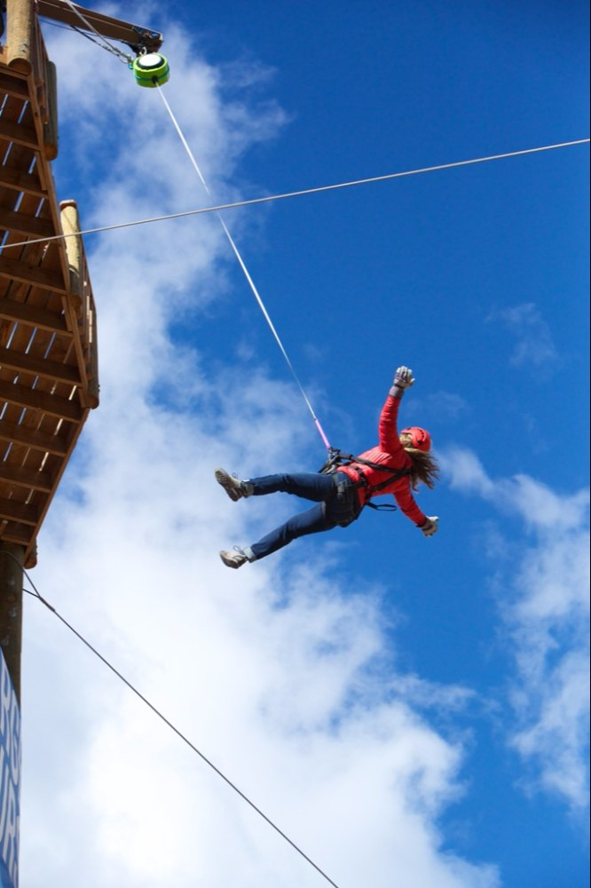
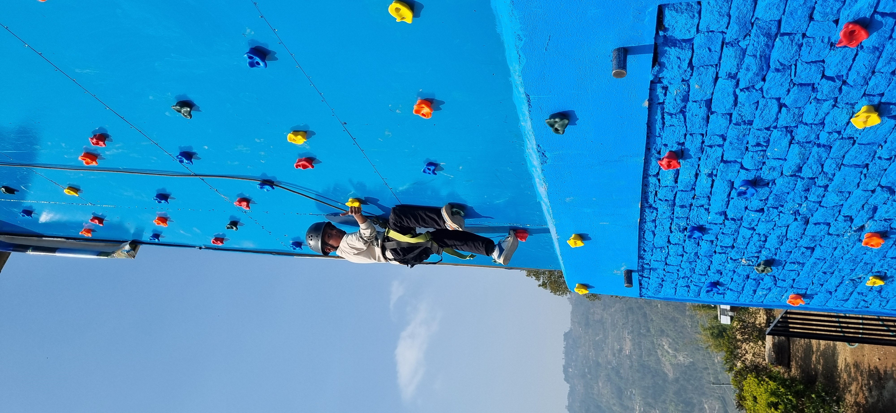
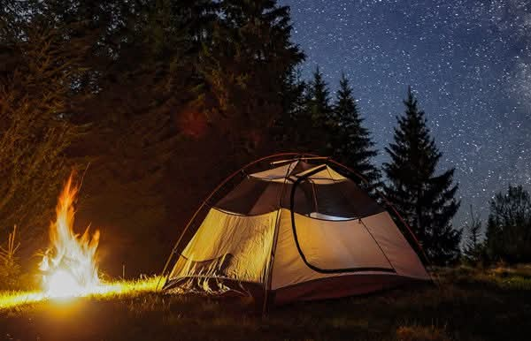
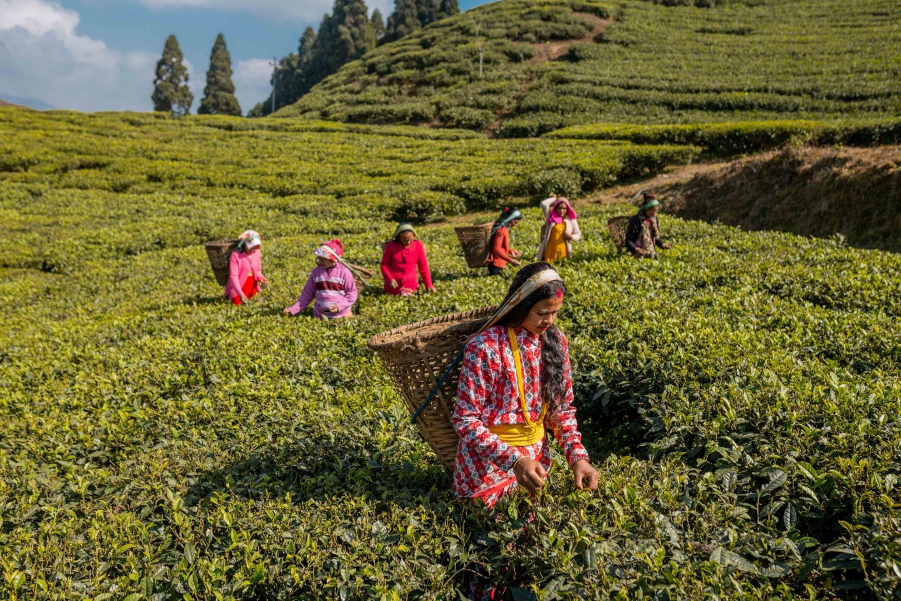
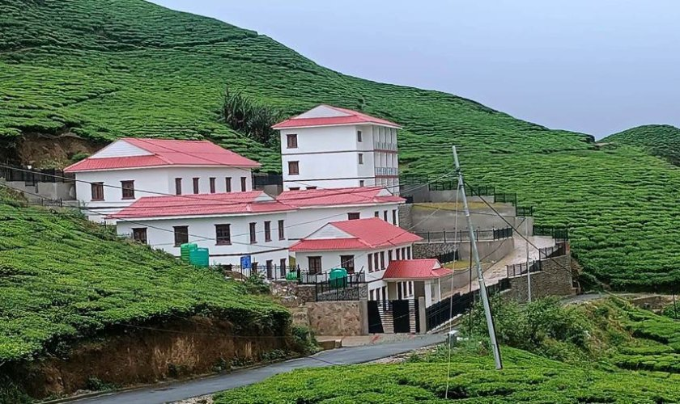
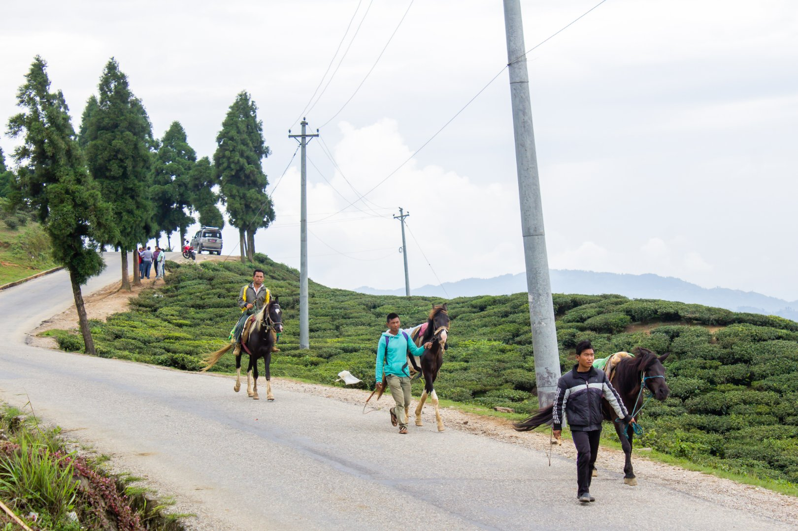
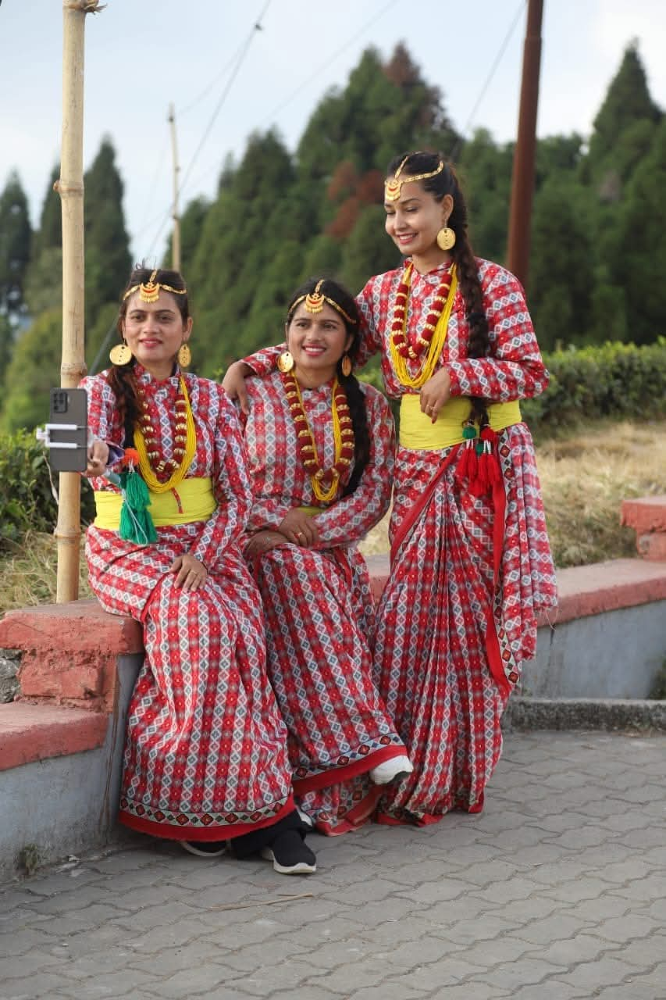
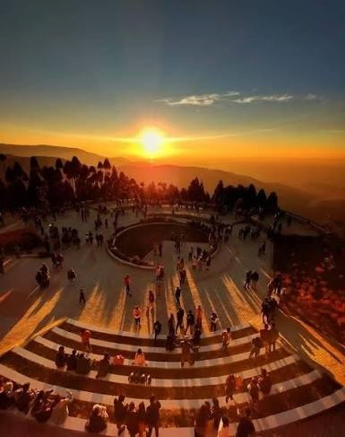
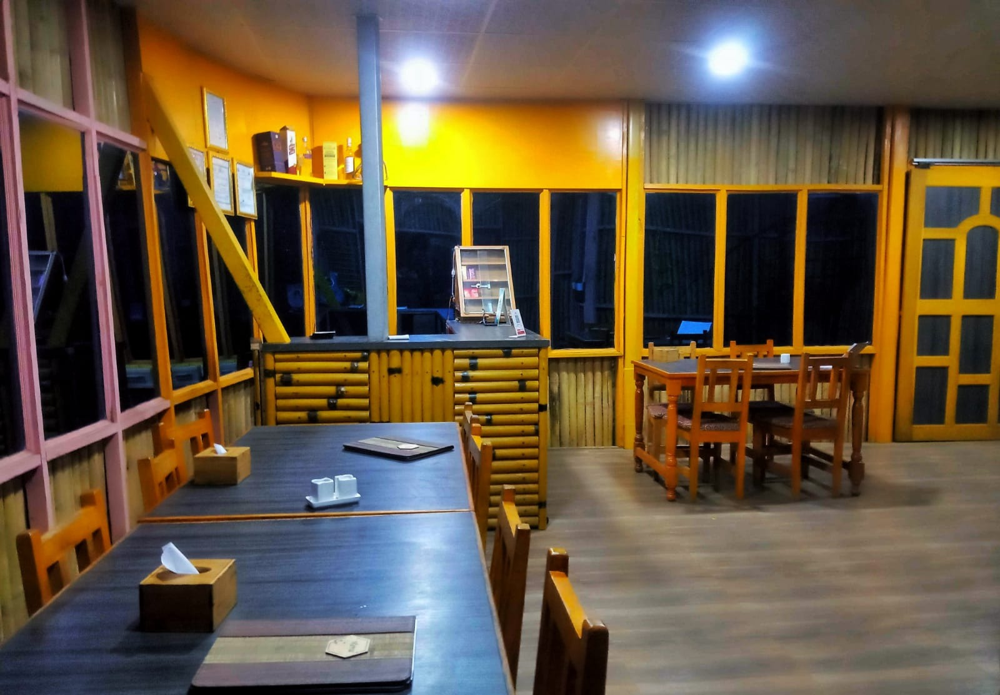

From zipline launches to sunrise light over the hills — filter the gallery by category to find exactly the mood you're after.
 ZipliningZipline Launch
ZipliningZipline Launch
 Sky CyclingSky Cycle Ride
Sky CyclingSky Cycle Ride

Quick JumpFree-fall Moment
Wall ClimbingOn the Wall ArcheryTarget Practice
ArcheryTarget Practice

CampingHillside Camp Adventure ParkPark Overview
Adventure ParkPark Overview
 Tea GardenKanyam Rows
Tea GardenKanyam Rows

Tea GardenAmong the Rows
Tea FactoryBehind the Scenes
Horse RidingThrough the Rows
PhotographyCultural Portraits SunriseShree Antu Dawn
SunriseShree Antu Dawn
 SunriseSea of Clouds
SunriseSea of Clouds
 Tea GardenAntu Slopes
Tea GardenAntu Slopes
 Antu PokhariLakeside
Antu PokhariLakeside
 HikingGufa Patal Trail
HikingGufa Patal Trail

ViewpointView Tower
FoodLocal Thali NearbyMai Pokhari
Kanyam Tea GardenSuryodaya AdventuresMai Pokhari
NearbyMai Pokhari
Kanyam Tea GardenSuryodaya AdventuresMai PokhariMai Pokhari is a forest lake with religious and environmental importance. Fir, pine, juniper, birch, and other plants surround its nine-cornered shape. It lies about 13 km north of Ilam Bazaar rather than beside Shree Antu — worth adding when you have an extra day for a wider Ilam trip, rather than trying to fit it into a rushed overnight visit.